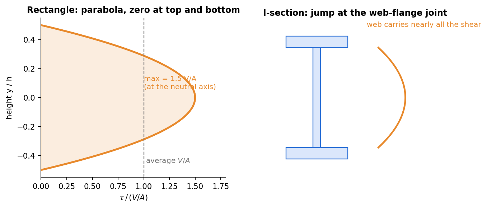

Strength of Materials · Shear Stresses in Beams · 2 min read
Shear Stress Formula for Beams
Related: Flexure Formula · Relations Between Load, Shear, and Moment · Plane Stress Transformation
Why Bending Produces Shear Stress Too
Since varies along the beam (whenever , by ), the bending stress on one face of a small beam slice differs from that on the opposite face. Horizontal equilibrium of a sub-element cut at height then requires a horizontal (and by pairing, vertical) shear stress on the longitudinal plane at that height.

Figure: the shear stress in a rectangular section is a parabola with peak at the neutral axis, and zero at the top and bottom faces. In an I-section the web carries nearly all of it.
The Shear Stress (Jourawski) Formula
where:
- = shear force at the section (from Shear Force and Bending Moment Diagrams)
- = moment of inertia of the whole cross-section about the neutral axis
- = width of the section at the height where is being found
- = first moment of the area beyond (between and the extreme fiber) about the neutral axis
Distribution Through the Depth
- at the extreme fibers ( there, since the "area beyond" vanishes).
- is maximum at the neutral axis for most common sections (where is maximum), not where bending stress is maximum — bending and shear stress peak at opposite locations through the depth.
- For a rectangular section : (1.5× the average shear stress ), occurring at the neutral axis, parabolic distribution.
- For a circular section: .
Shear Flow (Thin-Walled / Built-Up Sections)
For thin-walled or built-up sections (I-beams, box sections, welded/bolted plates), it's more natural to work with shear flow (force per unit length along the wall), which determines:
- The spacing/strength required for fasteners (rivets, bolts, welds) connecting flange to web.
- In I-beams, the web carries the overwhelming majority of the vertical shear (since and are both large there), which is why beam design often approximates .
Connection to Plane Stress
At any point in the beam (except the extreme fibers and neutral axis), both bending stress and shear stress act simultaneously — a full plane-stress state requiring Plane Stress Transformation to find the principal stresses that actually govern failure (this is why the top/bottom of an I-beam web, or the neutral axis, aren't always the critical points for a combined-stress failure check).
Check yourself
Q1. A 100 mm × 200 mm rectangular beam carries kN. Find the maximum shear stress.
MPa, at the neutral axis.
Q2. Why is the shear stress zero at the top and bottom faces?
, the first moment of the area beyond that level, is zero there, and the faces are stress-free.
Q3. In an I-beam, which part carries the shear?
The web: it is thin and runs between the flanges, so almost all of flows through it. The flanges carry little.